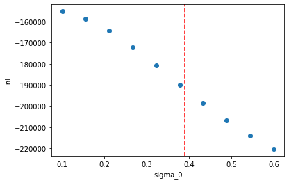
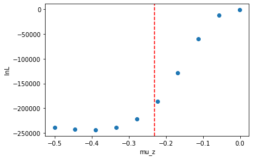
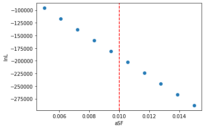
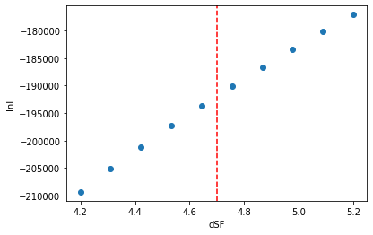

Example LnL Computation#
from lnl_computer.cosmic_integration.mcz_grid import McZGrid
from lnl_computer.cosmic_integration.star_formation_paramters import DEFAULT_DICT, draw_star_formation_samples
from lnl_computer.observation.mock_observation import MockObservation
from compas_python_utils.cosmic_integration.binned_cosmic_integrator.bbh_population import \
generate_mock_bbh_population_file
from collections import namedtuple
import os
from tqdm.auto import tqdm
import warnings
warnings.filterwarnings("ignore")
MOCK_DATA_TYPE = namedtuple('MockData', ['compas_h5_path', 'obs', 'duration', 'sf_sample'])
def generate_mock_data(tmpdir='out_temp', n_systems=2000):
os.makedirs(tmpdir, exist_ok=True)
DURATION = 5
mock_compas_h5 = generate_mock_bbh_population_file(
n_systems=int(n_systems), filename=f"{tmpdir}/mock_compas.h5",
)
mock_obs = MockObservation.from_compas_h5(mock_compas_h5, duration=DURATION, cosmological_parameters=DEFAULT_DICT)
return MOCK_DATA_TYPE(mock_compas_h5, mock_obs, DURATION, DEFAULT_DICT)
MOCK_DATA = generate_mock_data()
import matplotlib.pyplot as plt
def plot_lnls(param, values, lnls):
plt.figure()
plt.plot(values, lnls, 'o')
ylim = plt.ylim()
plt.vlines(MOCK_DATA.sf_sample[param], *ylim, colors='red', linestyles='dashed')
plt.ylim(ylim)
plt.xlabel(param)
plt.ylabel('lnL')
def compute_lnls_for_param(obs, param='mu_z', n_samples=10, ):
lnls = []
lnl_kwgs = dict(
mcz_obs=obs,
duration=MOCK_DATA.duration,
compas_h5_path=MOCK_DATA.compas_h5_path
)
samples = draw_star_formation_samples(n_samples, parameters=param, grid=True, as_list=True)
for sf_sample in samples:
lnl, _ = McZGrid.lnl(sf_sample=sf_sample, **lnl_kwgs)
lnls.append(lnl)
s = [list(sf_sample.values())[0] for sf_sample in samples]
return s, lnls
N = 10
sigma0s, sigma0_lnls = compute_lnls_for_param(MOCK_DATA.obs, 'sigma_0', N)
muzs, muz_lnls = compute_lnls_for_param(MOCK_DATA.obs, 'mu_z', N)
aSFs, aSF_lnls = compute_lnls_for_param(MOCK_DATA.obs, 'aSF', N)
dSFs, dSF_lnls = compute_lnls_for_param(MOCK_DATA.obs, 'dSF', N)
lnl_computer | 27/06/24 16:15:15 | INFO | Generating McZ grid: {'aSF': 0.01, 'dSF': 4.7, 'mu_z': -0.23, 'sigma_0': 0.1}
lnl_computer | 27/06/24 16:15:29 | INFO | Generating McZ grid: {'aSF': 0.01, 'dSF': 4.7, 'mu_z': -0.23, 'sigma_0': 0.15555555555555556}
lnl_computer | 27/06/24 16:15:42 | INFO | Generating McZ grid: {'aSF': 0.01, 'dSF': 4.7, 'mu_z': -0.23, 'sigma_0': 0.2111111111111111}
lnl_computer | 27/06/24 16:15:56 | INFO | Generating McZ grid: {'aSF': 0.01, 'dSF': 4.7, 'mu_z': -0.23, 'sigma_0': 0.26666666666666666}
lnl_computer | 27/06/24 16:16:05 | INFO | Generating McZ grid: {'aSF': 0.01, 'dSF': 4.7, 'mu_z': -0.23, 'sigma_0': 0.3222222222222222}
lnl_computer | 27/06/24 16:16:12 | INFO | Generating McZ grid: {'aSF': 0.01, 'dSF': 4.7, 'mu_z': -0.23, 'sigma_0': 0.37777777777777777}
lnl_computer | 27/06/24 16:16:19 | INFO | Generating McZ grid: {'aSF': 0.01, 'dSF': 4.7, 'mu_z': -0.23, 'sigma_0': 0.43333333333333335}
lnl_computer | 27/06/24 16:16:26 | INFO | Generating McZ grid: {'aSF': 0.01, 'dSF': 4.7, 'mu_z': -0.23, 'sigma_0': 0.4888888888888888}
lnl_computer | 27/06/24 16:16:33 | INFO | Generating McZ grid: {'aSF': 0.01, 'dSF': 4.7, 'mu_z': -0.23, 'sigma_0': 0.5444444444444444}
lnl_computer | 27/06/24 16:16:39 | INFO | Generating McZ grid: {'aSF': 0.01, 'dSF': 4.7, 'mu_z': -0.23, 'sigma_0': 0.6}
lnl_computer | 27/06/24 16:16:46 | INFO | Generating McZ grid: {'aSF': 0.01, 'dSF': 4.7, 'mu_z': -0.5, 'sigma_0': 0.39}
lnl_computer | 27/06/24 16:16:52 | INFO | Generating McZ grid: {'aSF': 0.01, 'dSF': 4.7, 'mu_z': -0.44455555555555554, 'sigma_0': 0.39}
lnl_computer | 27/06/24 16:16:59 | INFO | Generating McZ grid: {'aSF': 0.01, 'dSF': 4.7, 'mu_z': -0.38911111111111113, 'sigma_0': 0.39}
lnl_computer | 27/06/24 16:17:10 | INFO | Generating McZ grid: {'aSF': 0.01, 'dSF': 4.7, 'mu_z': -0.33366666666666667, 'sigma_0': 0.39}
lnl_computer | 27/06/24 16:17:20 | INFO | Generating McZ grid: {'aSF': 0.01, 'dSF': 4.7, 'mu_z': -0.27822222222222226, 'sigma_0': 0.39}
lnl_computer | 27/06/24 16:17:36 | INFO | Generating McZ grid: {'aSF': 0.01, 'dSF': 4.7, 'mu_z': -0.2227777777777778, 'sigma_0': 0.39}
lnl_computer | 27/06/24 16:17:47 | INFO | Generating McZ grid: {'aSF': 0.01, 'dSF': 4.7, 'mu_z': -0.16733333333333333, 'sigma_0': 0.39}
lnl_computer | 27/06/24 16:18:05 | INFO | Generating McZ grid: {'aSF': 0.01, 'dSF': 4.7, 'mu_z': -0.11188888888888893, 'sigma_0': 0.39}
lnl_computer | 27/06/24 16:18:15 | INFO | Generating McZ grid: {'aSF': 0.01, 'dSF': 4.7, 'mu_z': -0.056444444444444464, 'sigma_0': 0.39}
lnl_computer | 27/06/24 16:18:22 | INFO | Generating McZ grid: {'aSF': 0.01, 'dSF': 4.7, 'mu_z': -0.001, 'sigma_0': 0.39}
lnl_computer | 27/06/24 16:18:29 | INFO | Generating McZ grid: {'aSF': 0.005, 'dSF': 4.7, 'mu_z': -0.23, 'sigma_0': 0.39}
lnl_computer | 27/06/24 16:18:39 | INFO | Generating McZ grid: {'aSF': 0.0061111111111111106, 'dSF': 4.7, 'mu_z': -0.23, 'sigma_0': 0.39}
lnl_computer | 27/06/24 16:18:51 | INFO | Generating McZ grid: {'aSF': 0.007222222222222222, 'dSF': 4.7, 'mu_z': -0.23, 'sigma_0': 0.39}
lnl_computer | 27/06/24 16:18:58 | INFO | Generating McZ grid: {'aSF': 0.008333333333333333, 'dSF': 4.7, 'mu_z': -0.23, 'sigma_0': 0.39}
lnl_computer | 27/06/24 16:19:13 | INFO | Generating McZ grid: {'aSF': 0.009444444444444443, 'dSF': 4.7, 'mu_z': -0.23, 'sigma_0': 0.39}
lnl_computer | 27/06/24 16:19:23 | INFO | Generating McZ grid: {'aSF': 0.010555555555555554, 'dSF': 4.7, 'mu_z': -0.23, 'sigma_0': 0.39}
lnl_computer | 27/06/24 16:19:42 | INFO | Generating McZ grid: {'aSF': 0.011666666666666665, 'dSF': 4.7, 'mu_z': -0.23, 'sigma_0': 0.39}
lnl_computer | 27/06/24 16:20:00 | INFO | Generating McZ grid: {'aSF': 0.012777777777777777, 'dSF': 4.7, 'mu_z': -0.23, 'sigma_0': 0.39}
lnl_computer | 27/06/24 16:20:16 | INFO | Generating McZ grid: {'aSF': 0.013888888888888888, 'dSF': 4.7, 'mu_z': -0.23, 'sigma_0': 0.39}
lnl_computer | 27/06/24 16:20:31 | INFO | Generating McZ grid: {'aSF': 0.015, 'dSF': 4.7, 'mu_z': -0.23, 'sigma_0': 0.39}
lnl_computer | 27/06/24 16:20:48 | INFO | Generating McZ grid: {'aSF': 0.01, 'dSF': 4.2, 'mu_z': -0.23, 'sigma_0': 0.39}
lnl_computer | 27/06/24 16:21:04 | INFO | Generating McZ grid: {'aSF': 0.01, 'dSF': 4.311111111111111, 'mu_z': -0.23, 'sigma_0': 0.39}
lnl_computer | 27/06/24 16:21:18 | INFO | Generating McZ grid: {'aSF': 0.01, 'dSF': 4.4222222222222225, 'mu_z': -0.23, 'sigma_0': 0.39}
lnl_computer | 27/06/24 16:21:34 | INFO | Generating McZ grid: {'aSF': 0.01, 'dSF': 4.533333333333333, 'mu_z': -0.23, 'sigma_0': 0.39}
lnl_computer | 27/06/24 16:21:41 | INFO | Generating McZ grid: {'aSF': 0.01, 'dSF': 4.644444444444445, 'mu_z': -0.23, 'sigma_0': 0.39}
lnl_computer | 27/06/24 16:21:48 | INFO | Generating McZ grid: {'aSF': 0.01, 'dSF': 4.7555555555555555, 'mu_z': -0.23, 'sigma_0': 0.39}
lnl_computer | 27/06/24 16:21:57 | INFO | Generating McZ grid: {'aSF': 0.01, 'dSF': 4.866666666666667, 'mu_z': -0.23, 'sigma_0': 0.39}
lnl_computer | 27/06/24 16:22:12 | INFO | Generating McZ grid: {'aSF': 0.01, 'dSF': 4.977777777777778, 'mu_z': -0.23, 'sigma_0': 0.39}
lnl_computer | 27/06/24 16:22:29 | INFO | Generating McZ grid: {'aSF': 0.01, 'dSF': 5.088888888888889, 'mu_z': -0.23, 'sigma_0': 0.39}
lnl_computer | 27/06/24 16:22:48 | INFO | Generating McZ grid: {'aSF': 0.01, 'dSF': 5.2, 'mu_z': -0.23, 'sigma_0': 0.39}
plot_lnls('sigma_0', sigma0s, sigma0_lnls)
plot_lnls('mu_z', muzs, muz_lnls)
plot_lnls('aSF', aSFs, aSF_lnls)
plot_lnls('dSF', dSFs, dSF_lnls)
from lnl_computer.observation import load_observation
lvk_obs = load_observation('LVK')
N = 10
sigma0s, lvk_sigma0_lnls = compute_lnls_for_param(lvk_obs, 'sigma_0', N)
muzs, lvk_muz_lnls = compute_lnls_for_param(lvk_obs, 'mu_z', N)
aSFs, lvk_aSF_lnls = compute_lnls_for_param(lvk_obs, 'aSF', N)
dSFs, lvk_dSF_lnls = compute_lnls_for_param(lvk_obs, 'dSF', N)
plot_lnls('sigma_0', sigma0s, lvk_sigma0_lnls)
plot_lnls('mu_z', muzs, lvk_muz_lnls)
plot_lnls('aSF', aSFs, lvk_aSF_lnls)
plot_lnls('dSF', dSFs, lvk_dSF_lnls)



